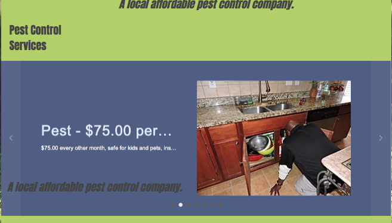
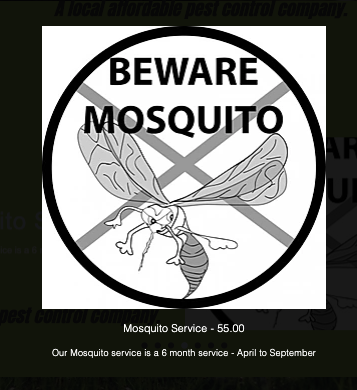
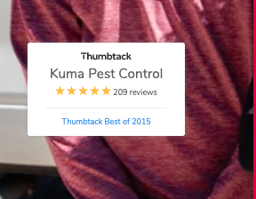
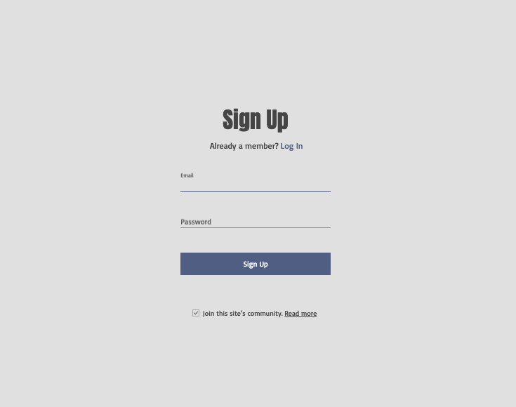
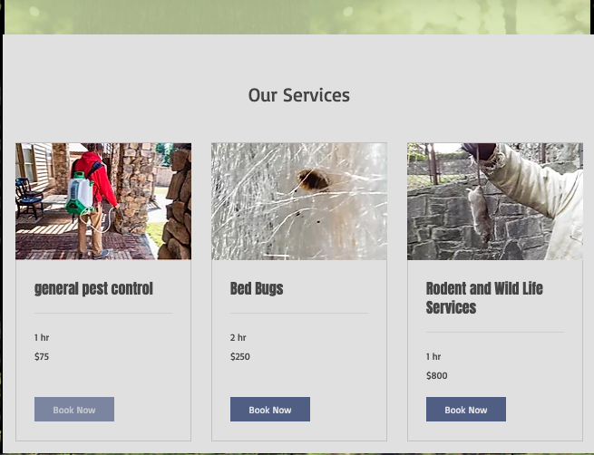

- Find the price of a regular pest control service.
- What months are mosquito services available?
- Find company reviews
- Make an account
- Book a service
- Task 1: Succesful ($75.00). User immediately recognized "Pest Control Services" in the navbar.
Once there easily found the arrows to switch services until finding "Pest". No mistakes.

- Task 2: Succesful (April-September). User tracked the "Pest Control Services" tab in the navbar and effectively scrolled to "Mosquito".
User could not find what months were available to start, but then the user quickly realized they had to click the "Mosquito" icon for the serficeto be explained in detail (Price, Season, Additional costs).

- Task 3: Succesful (Thumbtack or sidebar). User has bias (due to being owner of the company). He looked around the page and saw the picture on the left hand side of the page.
The picture displays a "Thumbtack" screenshot, that includes the business name and the number of reviews left. Immediately upon noticing this, he clicked "Thumbtack" from the navbar.

- Task 4: Succesful (Log in). User scanned top of the page first (Where log ins are commonly spotted). User then clicked the "More" section, which was found useless for this task.
User then noticed the small "Log in" underneath the "More". Once on this page, set up was easy to navigate.

- Task 5: Succesful ("Book a service"). After scanning the "Pest Control Services" tab, the user understood that booking a service wasn't available. The user then scrolled through the navbar until he got to "More".
The user then found "Book online" and clicked, which led him to a page of all services with a "Book now" button.

- Change default zoom to fit browser. (Task 3: Thumbtack)
- Give "Book a service" it's own tab in the navbar, to ease navigation.
- Change location/appearance of log in button. Blends in with background. (Task 4: Log in)